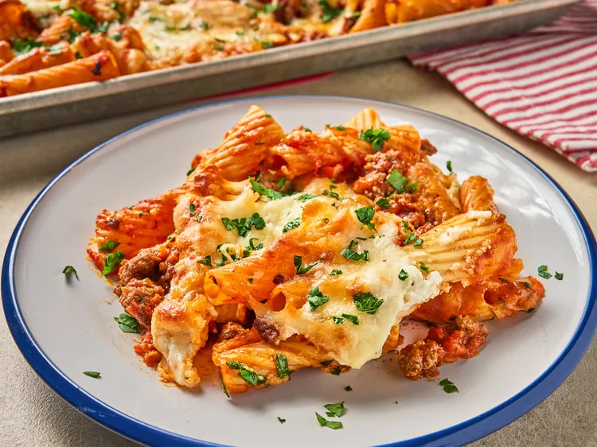

Preheat the oven to 425 degrees F (220 degrees C). Lightly grease a rimmed baking sheet with olive oil.
Cook meat in large skillet over medium-high heat until fat is rendered and meat is brown and crumbled. Add onion, 1/2 teaspoon pepper and 1/4 teaspoon garlic powder, and cook until soften.
Stir in sauce and brinf to a simmer. Simmer for 10 minutes.
Meanwhile, bring a large pot of salted awater to a boil, and cook pasta until tender with a bite, according to the package directions. Drain and stir pasta into auce. Spread mixture onto prepated baking sheet.
Stir cotage cheese and 1 cup Italian cheese together with remaining salt, pepper, and garlic powder. Dollop cheese micture over pasta micture and spread remaining Italaina chees over the top
Bake in the preheated oven until bubbly and lightly browned and crisp around the edges, 20 to 25 minutes.